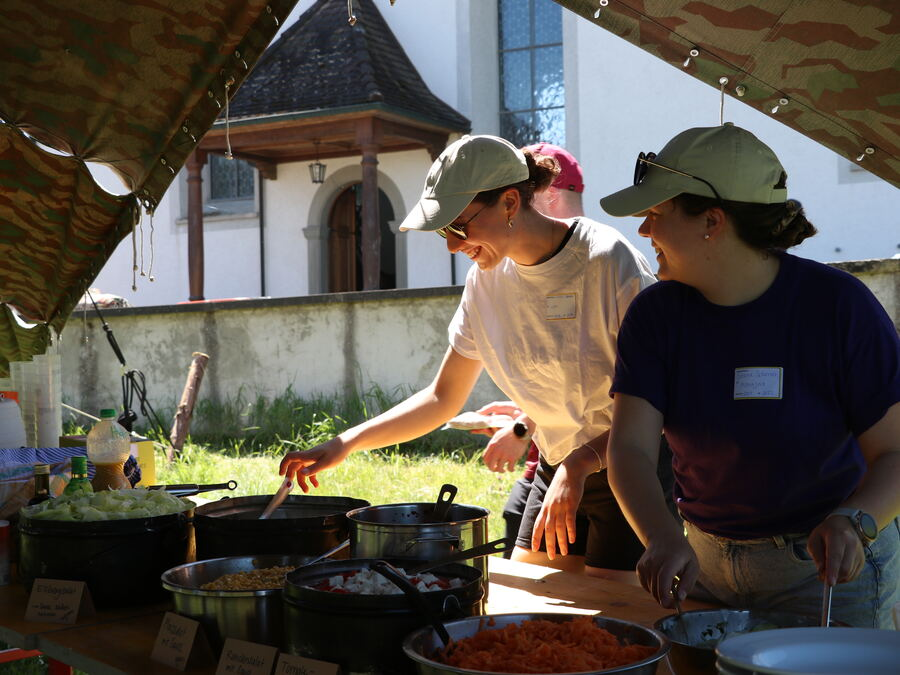

Cevi Schönholzerswilen-Wuppenau
Schön, dass du da bist! Bei uns erlebt dein Kind jeden zweiten Samstagnachmittag Abenteuer draussen in der Natur, vom Kindergarten bis zur 1. Oberstufe.
- Jeden 2. Samstag13:45 – 17:00 Uhr
- Begegnungsraum8577 Schönholzerswilen
- Kindergarten bis 1. Oberstufein vier Altersgruppen
- CHF 70.– / 35.– pro JahrJungschärler / Fröschli
Was dein Kind bei uns erlebt
Wir sind eine Jungschar mit christlicher Grundlage. Am Herzen liegt uns eine lebendige Gemeinschaft mit Gott und untereinander, und dass die Kinder gemeinsam etwas erleben.
Unser Leiterteam bereitet alle zwei Wochen ein Programm vor: Geländespiele, Bauen im Wald, Kochen auf dem Feuer und eine Geschichte als roter Faden. Dein Kind ist dabei in einer Gruppe mit Gleichaltrigen unterwegs.
Einmal im Jahr fahren wir zusammen ins Lager, im Zelt oder in einem Lagerhaus.
Eindrücke




Häufige Fragen von Eltern
Ab welchem Alter kann mein Kind mitmachen?
Ab dem 1. Kindergarten bei den Fröschli. Ab der 2. Klasse bis zur 1. Oberstufe gehören die Kinder zu den Jungschärlern.
Kann mein Kind zuerst schnuppern?
Ja, sehr gerne! Dein Kind kann ohne Voranmeldung an einem Cevinachmittag vorbeikommen. Die Daten findest du im Kalender.
Wann und wo findet der Cevi statt?
Alle zwei Wochen am Samstag von 13:45 bis 17:00 Uhr. Beginn und Schluss sind beim Begegnungsraum der evangelischen Kirche in 8577 Schönholzerswilen. Die Fröschli treffen sich einmal im Monat.
Was muss mein Kind mitbringen?
Wetterfeste Kleidung, da das Programm draussen stattfindet, und eventuell ein Sackmesser.
Was kostet die Teilnahme?
Der Jahresbeitrag beträgt CHF 70.– für Jungschärler (2. Klasse bis 1. Oberstufe) und CHF 35.– für Fröschli (Kindergarten bis 1. Klasse).
Wie erfahre ich von kurzfristigen Änderungen?
Am schnellsten über unsere WhatsApp-Community. Alle Termine findest du zudem im Kalender auf dieser Website.
Gibt es ein Lager?
Ja, einmal im Jahr, im Zelt oder in einem Lagerhaus. Datum und Infos findest du im Kalender und in der WhatsApp-Community.
Welche Rolle spielt der Glaube?
Wir sind eine Jungschar mit christlicher Grundlage. Zu jedem Programm gehören eine Geschichte und ein kurzer Input. Willkommen ist bei uns jedes Kind.
Wie melde ich eine neue Adresse oder Telefonnummer?
Über das Anmeldeformular. Dort kannst du uns auch Änderungen mitteilen.
Wo sehe ich Fotos?
Hier auf der Website zeigen wir nur eine kleine Auswahl. Alle Lagerfotos sind Eltern und Leitenden vorbehalten. Melde dich bei uns, dann erhältst du den Zugang: zum Kontakt.
Wir freuen uns auf dein Kind
Die Anmeldung läuft über ein Online-Formular. Dort kannst du uns auch eine neue Adresse mitteilen. Und wenn du Fragen hast: Wir sind gerne für dich da.